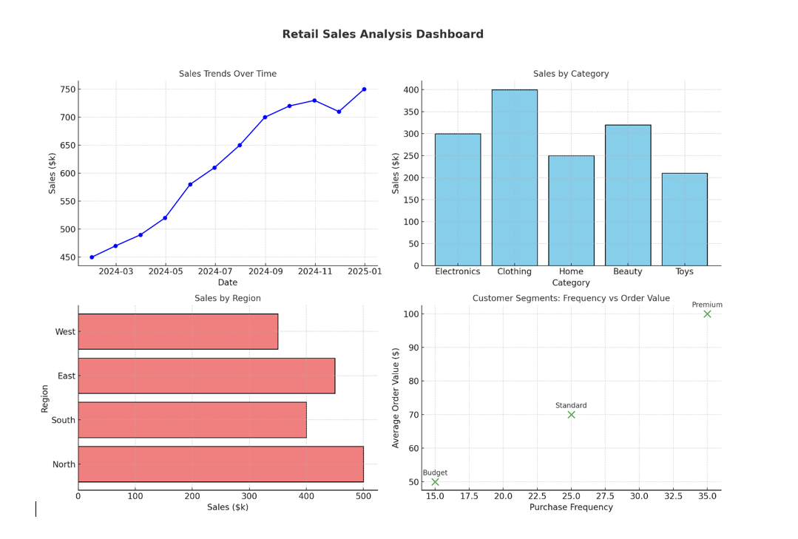

About Me
Hello! I'm Sarika Reddy Vontary, a passionate Software Engineer with experience in data analysis, software development, and cloud computing. I specialize in developing scalable applications using modern technologies like Python, Java, and AWS.
I have worked on a variety of projects ranging from building ETL pipelines, automating reporting systems, to developing custom dashboards using tools like Tableau, Power BI, and Looker. My goal is to create software solutions that drive data-driven decisions and optimize business processes.
Experience
EXPERIENCE
Software Engineer | Hilton, Virginia (January 2023 – Present)
- Optimized deployments with Future Business Machines by analyzing datasets using Python, SQL, and Tableau, Looker dashboards to generate insightful reports.
- Automated reporting system based on Excel and VBA to simplify data extraction and analysis, reducing reporting time from 10 hours per week to 2 hours.
- Developed ETL workflows with Hive and Hadoop to streamline data processing and enhance reporting efficiency.
- Developed scripts for importing/exporting data across multiple environments, migrated SQL Server, and worked on AWS to generate clean files in Amazon S3 and deploy files to Amazon EC2 Clusters.
Business Analyst Intern | Health Net, CA (March 2022 – June 2022)
- Developed custom Tableau dashboards to empower cross-functional teams with immediate, action-driven business KPIs which enabled ad-hoc report requests to be reduced by 12 hours per week and lessened dependency on the data team.
- Utilized SAP Business Warehouse to streamline data management and reporting processes for patient data.
- Streamlined customer survey reporting with Power Automate, Qualtrics saving 30% time and increasing accuracy.
- Reduced latency by 42% and secured business operations for its customers, successfully migrated MS Access DB to MS SQL Server.
Software Engineer | CHOC, India (March 2020 – May 2021)
- Developed CI/CD workflows and built 20 real-time reports using AWS Glue and AWS Lambda for scheduling and automation, providing insights that improved budget accuracy by 15% and enhanced sponsor and stakeholder efficiency.
- Architected scalable system infrastructures leveraging AWS services like Amazon Redshift and Amazon RDS to ensure flexibility and scalability in handling evolving data requirements.
- Automated integration pipelines using Python scripts and Bash, reducing manual effort by 40% and enhancing reliability. Utilized Amazon Kinesis and AWS EMR with Apache Spark to process and analyze large datasets in real-time with distributed data processing.
Software Developer | First Federal Bank, India (August 2018 – January 2020)
- Developed REST API to interface with Sybase databases, increasing transfer efficiency by 70%.
- Skilled in using Oracle for large-scale data management, including PL/SQL for complex data manipulation, and implementing high availability and robust security measures.
- Created custom Power BI visuals and dashboards using DAX queries for data-driven decision-making.
Projects
PROJECTS
Project 1 | Retail Sales Analytics Platform – Django, SQL, Pivot Tables (November 2023)
- Developed a research project using retail organization data on Azure Cloud to predict and analyze sales, applying data integration and quality checks to reveal key consumer behavior trends and market insights.
- Conducted statistical modeling to measure sales performance and provided actionable insights using Tableau.
- Built advanced visualizations to compare and communicate sales patterns, enabling data-driven decision-making for optimized sales strategies.
Project 2 | Inventory Management System – Python, NumPy, D3.js, Pandas (March 2022)
- Designed and implemented an SQL-based inventory management system on Azure Cloud for a retail organization, enhancing operational efficiency by 10%.
- Led the development of ER diagrams, database schema structuring, and creation of data flow and UML diagrams to ensure accuracy.
- Utilized Pandas and Python to streamline data processing and analysis, enabling real-time inventory tracking and optimization of supply chain workflows.
Tableau Dashboard Example

Retail Sales Analytics Platform

Inventory Management System

Certifications
- git learnings
- python for beginners
- Certified Scrum Product Owner (CSPO)
- SQL for Data Analysis